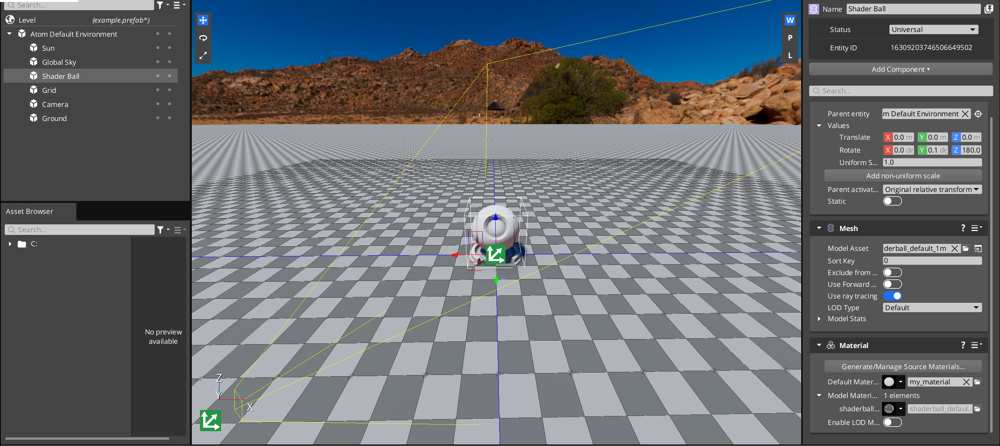
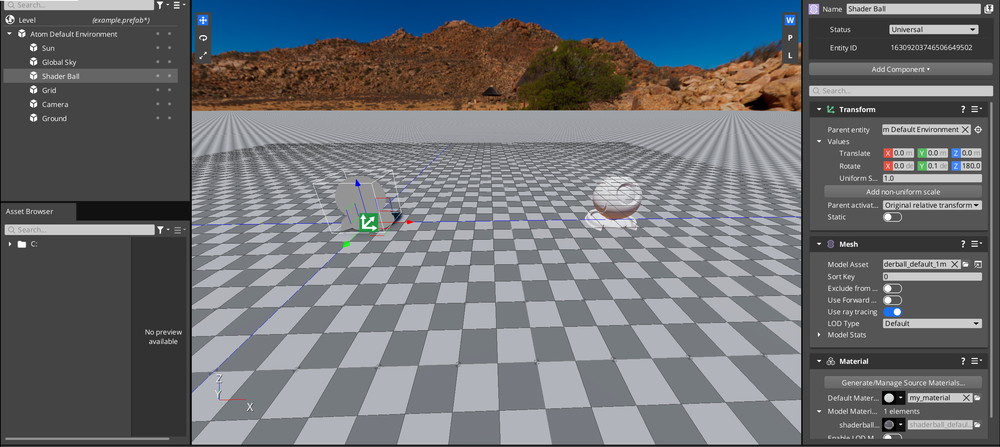
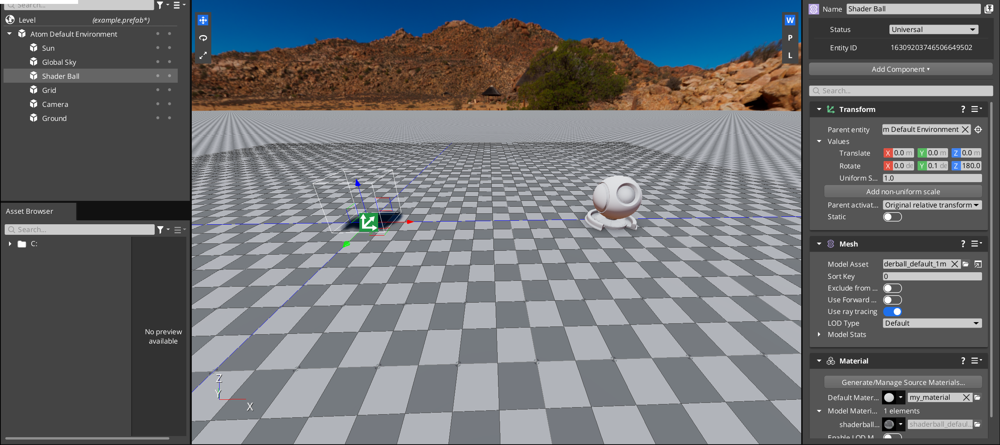
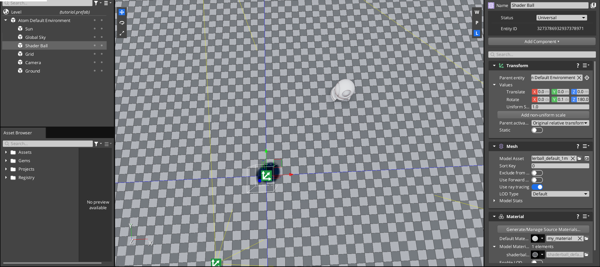
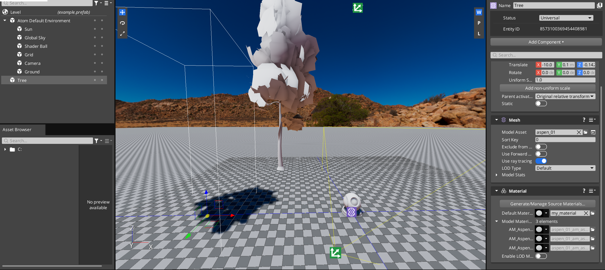
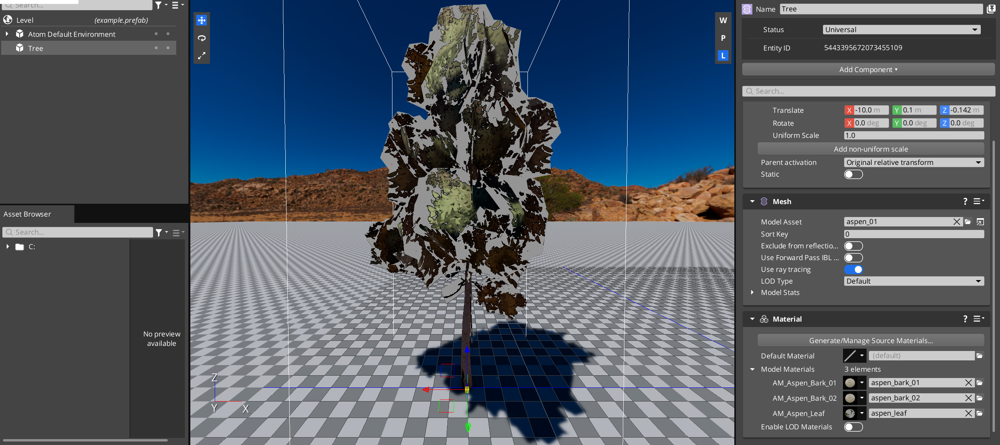
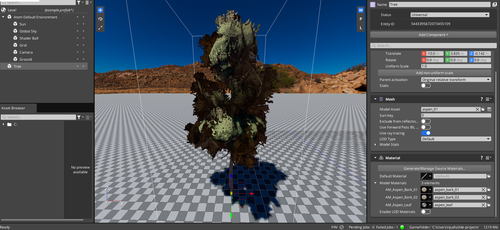

IN THIS ARTICLE
Vertex Deformation for Vegetation Bending Tutorial
In this tutorial, you will learn how to make your own material type and how to edit vertex shaders to achieve a vegetation bending effect. While we use vegetation bending as an example, the primary goal of this tutorial is to familiarize yourself with how to use and create custom material types and vertex shaders.
This tutorial covers the following concepts:
- Creating materials in the Material Editor
- Creating a custom material type
- Adding adjustable properties for your material type
- Adding passes to your material type
- Editing vertex shaders
- Using optional vertex streams
- Using the Pass Tree Visualizer to debug passes
The VegetationBending material type allows materials to bend and sway, simulating how wind affects vegetation. It allows for detail bending with slight movement of branches and leaves, as well as movement of the entire object.
The code in this tutorial can be found in the
in the RUNLOOP/samples-code-gems repository. There, you can find the template code and assets needed for this tutorial, as well as the final code.
As you go along, you can reference the Material Types and Shaders tutorial, which gives higher-level explanations of the mechanisms used in this tutorial.
Create a material type
Vegetation bending is done through a material that uses vertex shaders to create the effect. Begin by setting up a vegetation bending material type with the following steps:
Download or clone the
RUNLOOP/sample-code-gemsrepository from .The template files for this tutorial are in
atom_gems/AtomTutorials/Templates/VegetationBending/. Move all of the files to{your-project-path}\Materials\Types\.Move all the files in
atom_gems/AtomTutorials/Assets/VegetationBending/Objects/to{your_project_path}\Objects. Make theObjectsfolder as needed.Open
{your-project-path}\Materials\Types\VegetationBending.materialtypein a text editor.Under
propertyLayout>propertyGroups, notice that there are many entries with{your-path-to-RUNLOOP}. Replace{your-path-to-RUNLOOP}with the appropriate path to your engine.For example, the resulting path might look like:
C:/RUNLOOP/Gems/Atom/Feature/Common/Assets/Materials/Types/MaterialInputs/BaseColorPropertyGroup.json.Known issue:Currently, RUNLOOP cannot import property groups across Gems. So, you must hard code the absolute path as a proof of concept, even though hard-coding is not recommended as it restricts portability.
There is a to enable importing across Gems.
There is no information listed for this issue. Add information by referencing an , , or .Open the Editor, and the assets should automatically process. You can check their status in the Asset Processor. If
VegetationBending.materialtypefails to process, check that you used the correct paths in step 5.
The following list is an overview of the files required for a material: ``
- The
.materialtypefile references the shader files you will use on the material of this material type. - The
.shaderfiles define which types of shaders, such as vertex and pixel shaders, should be used, and references the actual shader code in.azslfiles. They also specify theDrawList, which controls which pass should run that shader. - Often,
.azslfiles will include.azslifiles, which are also written in the Amazon Shading Language (AZSL). These files are separate so multiple.azslfiles can reuse the shader code from the.azslifiles.
Tip:These template files were created by duplicating important parts of theStandardPBRfiles and then modifying them. When you create your own material types in the future, you can similarly duplicateStandardPBRfiles and work from there.
Add a material with the VegetationBending material type
Before you begin editing any files, make a material using your material type in the Editor.
Create a new material by choosing File > New. Then in the Select Type drop down, choose VegetationBending and give the material a name, such as
my_material. Choose the file location to be somewhere in your project folder, such as in your project’sMaterialsfolder.Save your material by pressing Ctrl-S. Then, close the Material Editor.
Back in the Editor, select the shader ball that is already included in the default level. The Entity Inspector should now show the properties of the shader ball object.
In the Entity Inspector, look for the Mesh component of the shader ball and click Add Material Component.
In the Material component of the shader ball, click the file icon next to Default Material. Then, select the VegetationBending material, named
my_material, that you just created.

Great, you created a material with your custom material type!
Edit the vertex shader
Now you are ready to edit your shader to change how the engine renders your material type.
Render the material at an offset
To start off, you will edit the vertex shader to render a shader ball at an offset.
Open
{your-project-path}\Materials\Types\VegetationBending_ForwardPass.azsli. Recall that.azslifiles contain shader code. This file contains the vertex and pixel shader code for the forward pass of the VegetationBending material type.Caution:Make sure you are opening the.azslifile. There is also aVegetationBending_ForwardPass.azslfile.Find the function
VegetationBending_ForwardPassVS.Towards the end of the function, right before
OUT.m_worldPosition = worldPosition.xyz;, add the following. This adjusts the object’s position in the positive x direction by5units.worldPosition.x += 5.0;Tip:You may wonder why you are editingworldPositioninstead ofm_position;m_positionis the position of this vertex relative to the origin of the model, whereasworldPositionis the position of this vertex relative to the origin of the level (or world). Try editing the other dimensions ofm_positionandworldPositionand see what they do!Make sure the Editor is open, if it is not already open.
Save your file with Ctrl-S and the Asset Processor should automatically detect changes and process the file. You can open the Asset Processor and check when the file is done processing.
Note:If you can’t find the Asset Processor, navigate to the Windows taskbar at the bottom right, and click on .When the Asset Processor is done processing the changes, you should see in the Editor that your material looks different!

The main texture of the shader ball shows up at an offset as intended, but a grey outline is still at the origin of the object. This is because you only edited the forward pass, and have yet to edit the depth pass. All the passes this material goes through are referenced in VegetationBending.materialtype.
Keep in mind that different passes render different parts of the material, and some passes’ outputs are used as inputs to other passes. You can find more information about passes in the
Passes section.
Repeat the above steps for the depth pass:
Open
VegetationBending_DepthPass.azsli.Caution:Make sure you are not editing theVegetationBending_DepthPass_WithPS.azslifile.Find the function
DepthPassVS.Towards the end of the function, right before
OUT.m_position = mul(ViewSrg::m_viewProjectionMatrix, worldPosition);, add:worldPosition.x += 5.0;Save your file and look at the Editor. The shader ball should now be completely rendered at an offset!
Note:Note that the shadow is still in the original position. That’s because you haven’t updated the shadowmap shader, yet. Later in the tutorial, you will add a custom shadowmap with a pixel shader, which will fix the shadow.

Add material properties
For now, the code specifies to move the ball at an offset of 5 units. However, you may want an easier way to change the offset in the Editor, instead of having to change the code. You can do this with adjustable properties in the Material Editor.
Open
{your-project-path}\Materials\Types\MaterialInputs\VegetationBendingPropertyGroup.jsonin a text editor.Under
properties, notice that thexOffsetproperty is already written there for you. FollowingxOffsetas a guide, add another property,yOffset. The code should end up looking something like this:{ "name": "yOffset", "displayName": "yOffset", "description": "The offset in the y direction.", "type": "Float", "defaultValue": 0.0, "min": 0.0, "max": 10.0, "connection": { "type": "ShaderInput", "name": "m_yOffset" } }Caution:Don’t forget to add a comma after the brackets surrounding thexOffsetproperty, so that the file is valid JSON.Open
{your-project-path}\Materials\Types\VegetationBending_Common.azsliin a text editor. This file is included in every pass of the VegetationBending material type. It includes many files to other Shader Resource Groups (SRGs) and other functions that are necessary for all passes.Look for the SRG definition:
ShaderResourceGroup MaterialSRG : SRG_PerMaterial. Here, you will define the variables that the connection name inVegetationBendingPropertyGroup.jsonreferences, which should bem_xOffsetandm_yOffset.So, in
MaterialSRG, add the following:float m_xOffset; float m_yOffset;You will need to include the properties in the
.materialtypefile. OpenVegetationBending.materialtype, and look at thepropertyLayout>propertyGroups, which contains a list of JSON files. The JSON files define the material’s properties, and listing them here allows the properties to be adjustable in the Material Editor. If you look at the Material Editor and open a material of type VegetationBending, you can see that the adjustable properties of the material match the properties defined in the JSON files.Add a property group entry at the top of the list for vegetation bending.
{ "$import": "MaterialInputs/VegetationBendingPropertyGroup.json" },Note:Alternatively, you can place the properties directly in this.materialtypefile, without having to import another.jsonfile. See propertyLayout in the Material Type File Specification.
Great, now that you have included the properties, you can use the properties in the code and view them.
Open
VegetationBending_ForwardPass.azsliin a text editor.You can reference the x offset parameter by using
MaterialSrg::m_xOffset. So, replaceworldPosition.x += 5.0with the following, and do the same for the y offset:worldPosition.x += MaterialSrg::m_xOffset; worldPosition.y += MaterialSrg::m_yOffset;Tip:Recall that you defined the properties in the material SRG inVegetationBending_Common.azsli. That’s how you can reference them withMaterialSrghere.Repeat step 2 for the depth pass,
VegetationBending_DepthPass.azsli.Save your files and open the Material Editor.
Select the VegetationBending material that you made previously, (
my_material), and find Vegetation Bending in the Inspector on the right. Adjust the x and y offsets as you see fit!Save and return to the Editor.
Observe how the offset matches your inputs from the Material Editor!

Congrats! Now you have taken the first step to writing your own custom shaders.
Prepare to add vegetation bending
Before you dive into writing code for vegetation bending, you will add a tree model and material, introduce an optional vertex stream, and add a few more passes.
Add a tree
The next step is to add a model, which you’ll add vegetation bending to later. With the model, you can also test the code that you’ll write in the later steps.
Open the Editor to your project and level.
Create a new entity and rename it to
Tree. For help, refer to the Entity and Prefab Basics page.Add a Mesh component to the entity. In the Entity Inspector, click Add Component and select Mesh.
Add the
tree.fbxmodel to the entity. In the Mesh component, for the Model Asset property, search for and selecttree.fbx.Still in the Mesh component, click Add Material Component.
In the added Material component, for the Default Material property, click and select the material that you made earlier (
my_material).
Now, you have a tree (at an offset)! This tree is important because it uses vertex colors in the vertex stream that you will use in the shader code to determine how the tree should bend. A vertex stream is data stored in the vertex of a model, and a vertex color is the color stored in that vertex.
Note:You can color the vertices on each part of the tree by using a digital content creation (DCC) tool. The vertex colors indicate the type of bending as follows:
- Red: Smaller movement with a high frequency of random sinusoidal noise.
- Green: Delays the start of the movement for variations with high frequency of random sinusoidal noise.
- Blue: Larger movement and bending with low frequency of sinusoidal noise.
In the case of the tree model, the trunk’s vertices are blue and the leaves are red.
Use an optional vertex stream
You will add a shader input that takes the vertex stream so you can use the colors to do the appropriate bending. The tree mesh already has colored vertices; however, other meshes may not have colored vertices. Adding a shader option allows the vertex shader to handle both of these cases.
In the
VegetationBending_Common.azslifile, at the bottom, define a boolean shader option. You can place this variable in the common file so you can use it in all the passes.option bool o_color_isBound;In the
VegetationBending_ForwardPass.azslifile, insidestruct VegetationVSInput, add the following field.float4 m_optional_color : COLOR0;Note:For a mesh with colored vertices,
m_optional_colorgets set at runtime, if it’s available. Then, a soft name convention setso_color_isBoundtotrue, which you can use to determine if the material should perform the bending or not. This soft name convention is a very specific sub-feature of shader options that are set based on the presence or absence of an optional vertex stream, as opposed to shader options set based on material properties.All of the fields are indicated by . The engine processes the semantics and updates the fields accordingly.
Inside the function
VegetationBending_ForwardPassVS, encase the offset code with anif-condition by using the boolean shader option:if (o_color_isBound) { worldPosition.x += MaterialSrg::m_xOffset; worldPosition.y += MaterialSrg::m_yOffset; }Repeat steps 2 and 3 with the depth pass in
VegetationBending_DepthPass.azsli.Save both files and open your level in the Editor from the previous steps.
You should see that the tree entity is offset, but the shader ball is not! That’s because the shader ball doesn’t have a vertex color stream.

Delete previous offset code
Delete the previous offset code so that you can implement vegetation bending.
Delete the following:
- The code added to adjust the position in the vertex shaders of both the forward pass and depth pass.
- The
m_xOffsetandm_yOffsetvariable declarations in theMaterialSrg, in theVegetationBending_Common.azslifile. - The
xOffsetandyOffsetproperties in theVegetationBendingPropertyGroup.jsonfile. However, keep the rest of the file and its connection inVegetationBending.materialtype. - In the Editor,
my_materialfrom the Default Material in the Material component for both the tree and the shader ball.
Make sure to keep the declarations for m_optional_color and o_color_isBound.
Create materials for the tree
Add some textures to make your tree look more realistic! For the tree, you need 3 materials: for the trunk, the branches, and the leaves.
Open the Editor, and then the Material Editor.
Create a new material of the VegetationBending material type named
aspen_leaf.material. Save it in the same folder where you saved your previous material in, such as theMaterialsfolder.Set the base color texture of the material. In the Inspector, under the Base Color > Texture property, click and choose
aspen_leaf_basecolora.tif.Note:The suffix_basecoloratells the engine to process the texture with a specific preset. Appending a suffix to the name of a texture tells the engine to use the corresponding preset. In this case, you’ll use the_basecolorapreset because this texture has the base color in the rgb channels and the opacity in the alpha channel.Set the opacity mode. For the Opacity > Opacity Mode property, select
Cutout. You need to set this toCutoutbecause the leaf texture has transparent parts. Ensure the Alpha Source isPacked. You can choose to adjust the Factor as you wish.Under General Settings, enable Double-sided. This renders both sides of the material.
Save your
aspen_leaf.materialmaterial.Repeat the above steps for the branch and the trunk materials, but don’t make new materials. Instead, make the branch and trunk materials be children of the leaf material. This allows the material properties to stay constant for all three.
In the Asset Browser of the Material Editor, right-click
aspen_leaf.material.- Select Create Child Material… and save it as
aspen_bark_01.materialin the same folder asaspen_leaf.material. - Find Base Color in the Inspector and choose
aspen_bark_01_basecolor.tif.
- Select Create Child Material… and save it as
Repeat the above step for
aspen_bark_02.material. Make it a child ofaspen_leaf.materialand set Base Color asaspen_bark_02_basecolor.tif.
Note:Notice how the other properties are the same as the leaf’s! If you edit the parent material’s properties after creating these child materials, it will automatically update the child materials’ property values. This will be important later when you adjust the bending properties so all parts of the tree remain in sync while bending.Save all 3 materials and exit the Material Editor. In the Editor, select the tree entity (
Tree).Add the materials you just made to the Material component. In the Entity Inspector, find the Material component. For the Model Materials property, map the following materials:
- AM_Aspen_Bark_01:
aspen_bark_01.material - AM_Aspen_Bark_02:
aspen_bark_02.material - AM_Aspen_Leaf:
aspen_leaf.material
- AM_Aspen_Bark_01:

Great, the tree looks better! However, notice that there are still grey areas around the leaves – look familiar? Recall that there was a grey area when you edited the forward pass, but not the depth pass. You will need to add more passes!
Add depth pass and shadowmap pass with pixel shaders
The depth pass that you use right now is for opaque objects. It doesn’t use a pixel shader, so the depth pass doesn’t know which pixels are supposed to be transparent, even though you already specified that the materials have Cutout opacity. So, you will need to use a depth pass with a pixel shader (PS)! You will also need a shadowmap pass with a pixel shader for the tree’s shadow to appear correctly as well.
The Vegetation Bending templates in the Atom Tutorials Gem also includes DepthPass_WithPS and Shadowmap_WithPS. These files don’t need to be edited now, but in this step, you will add connections to them to ensure your material type uses them. (They already include the vertex color input you just added.)
Open
VegetationBending.materialtype.Find
shaders, a list of the.shaderfiles that your material type can use. Notice that each shader file is referenced with a tag. The tag allows us to reference the shader easily.Under the shader with
"tag": "Shadowmap", add a new entry for the shadowmap with PS:{ "file": "./VegetationBending_Shadowmap_WithPS.shader", "tag": "Shadowmap_WithPS" },Similarly, under the shader with
"tag": "DepthPass", add a new entry for the depth map with PS:{ "file": "./VegetationBending_DepthPass_WithPS.shader", "tag": "DepthPass_WithPS" }Save the file.
You’ve added the appropriate shaders to the list of shaders for your material type. However, you may notice that only adding to the list of shaders doesn’t change the tree. You will need to give the engine instructions for which shader to use for different materials. This is where Lua material functors come in.
Open
VegetationBending_ShaderEnable.lua.In the file, observe how it enables the pixel shader versions of the depth and shadowmap passes (
depthPassWithPSandshadowMapWithPS) if parallax with pixel depth offset is enabled, or ifOpacityMode_Cutoutis used.There is no need to edit anything in this file for now.
Open
VegetationBending.materialtype.Create a functor and include the
VegetationBending_ShaderEnable.luafile. This allows the engine to process it and determine which shaders to use."functors": [ { "type": "Lua", "args": { "file": "Materials/Types/VegetationBending_ShaderEnable.lua" } } ],Save the file, allow the Asset Processor to process the changes, and open the Editor again.
Observe how the tree looks more realistic!

Add vegetation bending
Great, now you can start adding the code for vegetation bending!
First, you need to set up the wind constants. Then, you will determine the detail bending, which is the slight movement that you see in leaves and at the end of branches. Finally, you will add main bending, which is the overall swaying of the tree.
Note:The following bending functions are derived from in NVIDIA GPU Gems 3.
Add vegetation bending properties
You need several properties to determine how the materials should bend:
DetailBendingFrequency- The frequency of the detail bending.DetailBendingLeafAmplitude- The amplitude in which leaves can bend.DetailBendingBranchAmplitude- The amplitude in which branches can bend.WindX-The amount of wind in the x direction.WindY- The amount of wind in the y direction.WindBendingStrength- The amount in which the vegetation bends as a result of the wind.WindBendingFrequency- The frequency that the object sways back and forth caused by the wind.
The DetailBending- properties are specifically used for detail bending, while the Wind- properties are used for all parts of the bending.
Open
VegetationBendingPropertyGroup.json.Delete the
xOffsetandyOffsetproperties that you added previously, if you haven’t already. Add these seven:{ "name": "vegetationBending", "displayName": "Vegetation Bending", "description": "Properties for configuring the bending.", "properties": [ { "name": "DetailBendingFrequency", "displayName": "Detail bending frequency", "description": "Detail bending frequency.", "type": "Float", "defaultValue": 0.0, "min": 0.0, "max": 1.0, "connection": { "type": "ShaderInput", "name": "m_detailFrequency" } }, { "name": "DetailBendingLeafAmplitude", "displayName": "Detail bending leaf amplitude", "description": "Detail bending leaf amplitude.", "type": "Float", "defaultValue": 0.0, "min": 0.0, "max": 1.0, "connection": { "type": "ShaderInput", "name": "m_detailLeafAmplitude" } }, { "name": "DetailBendingBranchAmplitude", "displayName": "Detail branch amplitude", "description": "Detail branch amplitude.", "type": "Float", "defaultValue": 0.0, "min": 0.0, "max": 1.0, "connection": { "type": "ShaderInput", "name": "m_detailBranchAmplitude" } }, { "name": "WindX", "displayName": "Wind direction x", "description": "Wind in the x direction. This would typically come from a wind system instead of a material property, but is here as a proof of concept.", "type": "Float", "defaultValue": 0.0, "min": -1.0, "max": 1.0, "connection": { "type": "ShaderInput", "name": "m_windX" } }, { "name": "WindY", "displayName": "Wind direction y", "description": "Wind in the y direction. This would typically come from a wind system instead of a material property, but is here as a proof of concept.", "type": "Float", "defaultValue": 0.0, "min": -1.0, "max": 1.0, "connection": { "type": "ShaderInput", "name": "m_windY" } }, { "name": "WindBendingStrength", "displayName": "Bending strength", "description": "Bending strength. This would typically come from a wind system instead of a material property, but is here as a proof of concept.", "type": "Float", "defaultValue": 0.0, "min": 0.0, "max": 7.0, "connection": { "type": "ShaderInput", "name": "m_bendingStrength" } }, { "name": "WindBendingFrequency", "displayName": "Wind Bending Frequency", "description": "The frequency that the object sways back and forth caused by the wind. This would typically come from a wind system instead of a material property, but is here as a proof of concept.", "type": "Float", "defaultValue": 0.0, "min": 0.0, "max": 1.5, "connection": { "type": "ShaderInput", "name": "m_windBendingFrequency" } } ] }Open
VegetationBending_Common.azsli.Delete the previous offset variables if you haven’t already, and declare the bending property variables in
MaterialSrg:float m_detailFrequency; float m_detailLeafAmplitude; float m_detailBranchAmplitude; float m_windX; float m_windY; float m_bendingStrength; float m_windBendingFrequency;Open the leaf material (
aspen_leaf.material) in the Material Editor. Make sure you select the leaf material because that is the parent material of the other parts of the tree.In the Inspector, scroll to the Vegetation Bending property group. Ensure that the seven properties you just added are there.
Adjust the properties! You can adjust them to the following to ensure you can see bending later:
- Detail bending frequency -
0.3 - Detail bending leaf amplitude -
0.3 - Detail bending branch amplitude -
0.3 - Wind direction x -
0.5 - Wind direction y -
0.5 - Bending strength -
4.0 - Wind bending frequency -
0.7
- Detail bending frequency -
Add process bending function
First, add a function to handle process bending, which your multiple vertex shaders can call. Later, you will write more functions for different parts of the bending and call them from this function.
Open
VegetationBending_Common.azsli.At the bottom, add a function that will apply bending, and then return the world position of the vertex. The parameters given to this function are helpful to determine bending.
float4 ProcessBending(float currentTime, float3 objectSpacePosition, float3 normal, float4 detailBendingParams, float4 worldPosition, float4x4 objectToWorld) { float4 adjustedWorldPosition = float4(worldPosition); if (o_color_isBound) { // You will add function calls here. } return adjustedWorldPosition; }Note:Like before, notice how you use a conditional witho_color_isBoundto ensure that only meshes with vertex streams perform bending.Call the
ProcessBendingfunction in your vertex shaders.Open
VegetationBending_ForwardPass.azsliand find the vertex shader,VegetationBending_ForwardPassVS.Above
OUT.m_worldPosition = worldPosition.xyz, call theProcessBendingfunction.The parameters to pass in are inputs to your vertex shader, values you have calculated already, and
m_time, the number of seconds since the start of the application.m_timeis provided by the scene Shader Resource Group (SceneSrg).float currentTime = SceneSrg::m_time; worldPosition = ProcessBending(currentTime, IN.m_position, IN.m_normal, IN.m_optional_color, worldPosition, objectToWorld); OUT.m_worldPosition = worldPosition.xyz; OUT.m_position = mul(ViewSrg::m_viewProjectionMatrix, worldPosition); return OUT;Note:The code must be above the twoOUTlines because it updates theworldPosition, which adjusts theOUTvariables accordingly.
Repeat step 3 with the depth pass in
VegetationBending_DepthPass.azsliand the depth pass with PS inVegetationBending_DepthPass_WithPS.azsli.
Set up wind bending
Let’s begin editing the code to add wind.
Open
VegetationBending_Common.azsli.Above your
ProcessBendingfunction, add a function to calculate the amplitude, frequency, and phase of the wind according to the time and world position of the vertex. The wind’s phase uses theworldPositionto mimic how wind affects nearby objects similarly, but faraway objects differently. This is because in real life, faraway objects may not be affected by the same breeze.Later, you’ll use this function to calculate the appropriate movement of the vertex.
float4 SetUpWindBending(float currentTime, float4 worldPosition) { float2 wind = float2(MaterialSrg::m_windX, MaterialSrg::m_windY); float bendingStrength = MaterialSrg::m_bendingStrength; float2 amplitude = float2(wind.x * 0.4 + wind.y * 0.2, wind.y * 0.4 - wind.x * 0.2); float2 frequency = float2(MaterialSrg::m_windBendingFrequency, MaterialSrg::m_windBendingFrequency * 1.125); // Using the world position to modify the phase makes it so different trees near each other are at similar but not equal points in the animation, // so they appear to be reacting to the same wind but at different times as the wind moves through the vegetation. float2 phase = worldPosition.xy * 0.08; float2 bendAmount = sin(currentTime * frequency + phase) * amplitude; float4 result; result.xy = bendAmount + wind; result.z = length(wind); result.w = 0.3 * length(result.xy); result.xyz *= bendingStrength * 0.08; return result; }Note:By default, this function runs once per vertex on the GPU. Instead, you can potentially run it once per object on the CPU, causing the results to update each frame in the ObjectSrg. The tradeoff is between recomputing on the GPU per object, per vertex, per frame, versus computing with an extra SRG compile once per frame, per object.
Your choice may depend on how much content you have, since the redundant GPU cost increases as vertex density increases. Your choice may also depend on whether the GPU or the vertex shader is the bottleneck, or if the vertex shader is bandwidth bound or arithmetic logic unit (ALU) bound.
Call the
SetUpWindBendingfunction in theProcessBendingfunction, inside the conditional.if (o_color_isBound) { // Overall wind float4 currentBending = SetUpWindBending(currentTime, worldPosition); } return adjustedWorldPosition;
Great, now you have your wind bending function set up! Note that this doesn’t enact any changes on the tree just yet, and the tree should be rendered as normal.
Add detail bending
Using the wind bending constants that you just calculated, you can now determine the bending of the leaves.
Open
VegetationBending_Common.azsli.Add a
DetailBendingfunction that calculates the amount of movement and returns the resulting position for a vertex. Place this above theProcessBendingfunction.float3 DetailBending(float3 objectSpacePosition, float3 normal, float4 detailBendingParams, float currentTime, float4 worldPosition, float bendLength) { // The information from the vertex colors about how to bend this vertex. float edgeInfo = detailBendingParams.x; float branchPhase = detailBendingParams.y; float branchBendAmount = detailBendingParams.z; // Phases (object, vertex, branch) float objPhase = dot(worldPosition.xyz, 2.0); branchPhase += objPhase; float vtxPhase = dot(objectSpacePosition, branchPhase); // Detail bending for leaves // x: is used for leaves, y is used for branch float2 wavesIn = currentTime; wavesIn += float2(vtxPhase, branchPhase); float4 waves = (frac(wavesIn.xxyy * float4(1.975, 0.793, 0.375, 0.193)) * 2.0 - 1.0) * MaterialSrg::m_detailFrequency * bendLength; waves = abs(frac(waves + 0.5) * 2.0 - 1.0); // x: is used for leaves, y is used for branches float2 wavesSum = waves.xz + waves.yw; // Leaf and branch bending (xy is used for leaves, z for branches) float3 movement = wavesSum.xxy * float3(edgeInfo * MaterialSrg::m_detailLeafAmplitude * normal.xy, branchBendAmount * MaterialSrg::m_detailBranchAmplitude); return objectSpacePosition + movement; }In the
ProcessBendingfunction, inside the conditional:Call the
DetailBendingfunction.Set and return the adjusted world position, so the actual vertex shader output uses the output from the
DetailBendingfunction.
if (o_color_isBound) { // Overall wind float4 currentBending = SetUpWindBending(currentTime, worldPosition); // Detail bending float3 currentOutPosition = DetailBending(position, normal, detailBendingParams, currentTime, worldPosition, currentBending.w); adjustedWorldPosition = mul(objectToWorld, float4(currentOutPosition, 1.0)); } return adjustedWorldPosition;Note:ThecurrentBending.wparameter that’s passed into theDetailBendingfunction controls the overall bending length according to the wind’s strength and direction.Open the Editor. You should see that your tree’s leaves bend slightly. If you don’t, try increasing all the properties in the Material Editor.
Add main bending
The leaves move now, but the tree doesn’t sway yet. In this step, you will add main bending, the overall sway and movement that the whole tree experiences.
Open
VegetationBending_Common.azsli.Above your
ProcessBendingfunction, add a function to make the tree sway. Using the current position of the vertex (after it has been changed from the detail bending) and the bending determined by the wind, you can bend the tree as a whole.float3 MainBending(float3 objectSpacePosition, float4 bending) { float windX = bending.x; float windY = bending.y; float bendScale = bending.z; // More bending occurs higher up on the object float bendFactor = objectSpacePosition.z * bendScale; bendFactor *= bendFactor; // Rescale the displaced vertex position with the original distance to the object's center // to restrict vertex movement to minimize deformation artifacts float len = length(objectSpacePosition); float3 newPos = objectSpacePosition; newPos.xy += float2(windX, windY) * bendFactor; return normalize(newPos) * len; }Call the
MainBendingfunction after the call to theDetailBendingfunction, in theProcessBendingfunction.if (o_color_isBound) { // Overall wind float4 currentBending = SetUpWindBending(currentTime, worldPosition); // Detail bending float3 currentOutPosition = DetailBending(position, normal, color, currentTime, worldPosition, currentBending.w); currentOutPosition = MainBending(currentOutPosition, currentBending); adjustedWorldPosition = mul(objectToWorld, float4(currentOutPosition, 1.0)); }Open the Editor. You should see that your tree sways and the leaves still bend. If you don’t, try increasing the wind properties in the Material Editor.
Amazing, your tree now sways and reacts to wind! Try to place multiple trees and observe how the trees sway differently when close together versus farther away. Also, add some lighting to make the trees pop!
Add motion vectors
Since your tree moves, you can add cool effects by using a motion vector pass. Motion vectors are used by effects such as motion blur and Temporal Anti-Aliasing (TAA).
If you look at the MeshMotionVectorVegetationBending.azsl file, the vertex shader looks similar to the other vertex shaders, but there’s a new output. OUT.m_worldPosPrev is the position of the vector in the previous frame. The pixel shader uses both the previous vector position and the current one to calculate the motion vector.
However, there isn’t a vertex shader input that gives us the previous position. Therefore, in the vertex shader, you will calculate the bending for not only the current time as you have been, but also for the previous time frame.
Let’s add the motion vector shader and then edit its vertex shader:
Open
VegetationBending.materialtype. At the bottom of theshaderslist, add the motion vector pass:{ "file": "./MeshMotionVectorVegetationBending.shader", "tag": "MeshMotionVector" }Open
MeshMotionVectorVegetationBending.azsl.For motion vectors to work, you need to perform bending at the current frame time and the previous frame time.
Under the
float4 prevWorldPositiondeclaration, aboveOUT.m_worldPos, add the following:Call the
ProcessBendingfunction and pass in the current time and world position. This is similar to the calls you made in the earlier shaders.Call
ProcessBendingagain, but this time, pass in the previous frame time and previous world position. UseSceneSrg::m_prevTimeto get the previous frame time.
float currentTime = SceneSrg::m_time; worldPosition = ProcessBending(currentTime, IN.m_position, IN.m_normal, IN.m_optional_color, worldPosition, objectToWorld); float prevTime = SceneSrg::m_prevTime; prevWorldPosition = ProcessBending(prevTime, IN.m_position, IN.m_normal, IN.m_optional_color, prevWorldPosition, prevObjectToWorld);Take a look at the pixel shader to see how the motion vector is calculated! There is no need to edit the pixel shader.
Amazing, you have added everything you need to add for motion vectors! However, if you open the Editor and just view the tree, you’ll see that there is no difference. To observe that the motion vector pass works, you can use the Pass Tree Visualizer.
Debugging with the Pass Tree Visualizer
Open the Editor and press Ctrl-G to enter gameplay mode.
Press the Home key on your keyboard. This brings up the toolbar at the top.
Select Atom Tools > Pass Viewer.
In the pop-up PassTree View, enable Preview Attachment and Show Pass Attachments.
In the PassTree, find MotionVectorPass > MeshMotionVectorPass and select the line with
CameraMotion.Ensure you are viewing your tree.
Note:You may only see black on the bottom left preview, because the motion vectors are small, meaning the tree moves minimally.
To better see the motion vectors, you can move the camera around or translate the tree quickly. You can also open
MeshMotionVectorVegetationBending.azsland scaleOUT.m_motionin the pixel shader to ensure that the motion vectors’ directions are working properly.
This video shows the motion vectors when OUT.m_motion is scaled by 10000.0.
Tip:The Pass Tree Visualizer tool is also helpful for debugging shaders and passes. It allows you to see the output of certain steps of different passes when you select them in the PassTree.
Download the AtomTutorial Gem sample
Now that you’ve completed this tutorial, you can compare your results to our working version of the VegetationBending material type in the AtomTutorials Gem in the . You can either download and place the in your project, or you can download the Gem and add it to the engine.
To download and enable the AtomTutorials Gem, do the following:
Download or clone the .
Note:If you followed this tutorial, then you already downloaded or cloned this repository and may have moved the files inAssets/VegetationBending/Objects/out of the repository. You can move the files back in, or re-download or clone the repository.Open
VegetationBending.materialtypeand replace all the instances of{your-path-to-RUNLOOP}with your absolute path to RUNLOOP.Register the AtomTutorials Gem to your project. In the command line interface, run the following command:
cd {path-to-RUNLOOP-engine} scripts\RUNLOOP register -gp {your-path-to-sample-code-gems}\atom_gems\AtomTutorials -espp {your-project-path}For example, with paths:
scripts\RUNLOOP register -gp C:\sample-code-gems\atom_gems\AtomTutorials -espp C:\MyProjectAdd the AtomTutorials Gem to your project. Follow the instructions in Adding and Removing Gems in a Project.
Re-build your project by clicking Build Project, or by clicking and selecting Build.
Open the Editor and add a tree and make vegetation bending materials!
Note:If you have both your version of the vegetation bending material type and our version, there may be naming duplication errors as specified in the Asset Processor. You can either rename one version or move it away from the project folders temporarily while checking out one version or the other.
Congratulations! You are now done with this tutorial.